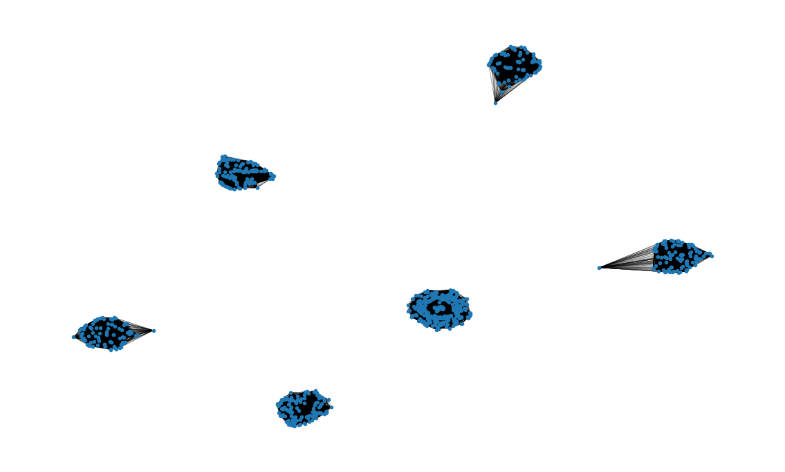

def sim_score(x:pd.Series, uid:pd.Series, t1=None, t2=None):
"""
Notes
-----
The problem with the current implementation is that we calculate all pairs of
distances and then we prune to keep only the neighbours for each instance.
A better approach would be to only generate neighbours as needed
"""
# Check for type of variable
# The method to check for category type was obtained from
# https://pandas.pydata.org/docs/dev/user_guide/categorical.html#gotchas
if hasattr(x, "cat"):
# Check if categorical is ordered
if x.cat.ordered:
res = _sim_ord_score(x, uid)
else:
res = _sim_nom_score(x, uid)
else:
res = _sim_cont_score(x, uid, t1, t2)
return resExploratory data analysis. Neighbours graph
networks
eda
Introduction
We want to study the heterogeneity of the sample and how is the target distributed along the samples. To do so we will first identify groups of observations that are close to each other (small cluster) and then we will represent this on a graph.
We will define a hierarchical? similarity metric where first we define similarity metrics across each variable and then a higher order? metric which is simply the sum of the similarities for each metric.
The similarity metric for each variable will depend on the type of the variable:
- Binary or nominal: The similarity will be 1 if they agree on value and 0 otherwise.
- Ordinal: The similarity will be 1 if they share the same value, 0.5 if they differ in only one level and 0 otherwise.
- Continuous: Define two thresholds \(t_{1}\) and \(t_{2}\) with \(t_{1} < t_{2}\). Calculate the distance between two instances \(d_{i,j}\). Then, the similarity \(s_{i,j}\) is, \[ s_{i,j} = \begin{cases} 1 & d_{i,j \leq t_{1}} \\ 0.5 & t_{1} < d_{i,j \leq t_{2}} \\ 0 & \text{otherwise} \end{cases} \]
Implementation of similarity
def _sim_cont_score(x:pd.Series, uid:pd.Series, t1:float, t2:float) -> pd.DataFrame:
"""Compute similarity score for a continuous variable
Parameters
----------
x :
Observations of the variable
uid:
Unique identifier of instance
t1 :
1-similarity threshold
t2 :
0.5-similarity threshold
It assumes missing values are encoded as NaN and that `t1` < `t2`
Similarity is defined based on thresholds,
If dist(x_{1}, x_{2}) <= `t1` -> similarity = 1,
else if `t1`<= dist(x_{1}, x_{2}) <= `t2` -> similarity = 0.5
otherwise similarity = 0
Notes
-----
We need to consider the following cases:
1. Both observations are real. In this case we calculate a distance
and the similarity is based on the thresholds
2. One observation is real and the other is missing (NaN). The distance is
NaN and the similarity is 0
3. Both obsrvations are missing. The distance is NaN and the similarity
will depend. We set to 1 at the beginning
"""
# Convert into nupy array with appropriate dimension
x_arr = np.expand_dims(x.values, axis=1)
# Get indices of upper triangular matrix (w/o main diagonal)
# This is so we can map the output of pdist to the appropriate instances
src, dest = np.triu_indices(len(x_arr), k=1)
# Calculate pairwise distances
dists = spsd.pdist(x_arr)
# Calculate similarity
condlist = [dists <= t1, dists <= t2]
choicelist = [1, 0.5]
sims = np.select(condlist, choicelist)
# Define output dataframe
res = pd.DataFrame({
'src':src,
'dest':dest,
'src_obs': [x_arr[idx][0] for idx in src],
'dest_obs': [x_arr[idx][0] for idx in dest],
'dist':dists,
'sim':sims})
# Compute similarity for missing observations
miss_1 = res.src_obs.isna()
miss_2 = res.dest_obs.isna()
# Case 1: One of the observations in missing
res.loc[miss_1 | miss_2, ['dist', 'sim']] = [np.nan, 0]
# Case 2: Both observations are missing
res.loc[miss_1 & miss_2, ['dist', 'sim']] = [np.nan, 1]
return res.loc[res.sim > 0, ['src', 'dest', 'sim']]def _sim_nom_score(x:pd.Series, uid:pd.Series):
"""
Parameters
----------
x :
Observations of the variable
uid:
Unique identifier of instance
It assumes missing values are encoded as -1 (standard code for category variables)
"""
# Convert into nupy array with appropriate dimension
x_arr = np.expand_dims(x.cat.codes, axis=1)
# Get indices of upper triangular matrix (w/o main diagonal)
# This is so we can map the output of pdist to the appropriate instances
src, dest = np.triu_indices(len(x_arr), k=1)
# Calculate pairwise distances
dists = spsd.pdist(x_arr)
# Calculate similarity
sims = np.where(dists == 0, 1, 0)
# Define output dataframe
res = pd.DataFrame({
'src':[uid[idx] for idx in src],
'dest':[uid[idx] for idx in dest],
'src_obs': [x_arr[idx][0] for idx in src],
'dest_obs': [x_arr[idx][0] for idx in dest],
'dist':dists,
'sim':sims})
# Compute similarity for missing observations
miss_1 = res.src_obs == -1
miss_2 = res.dest_obs == -1
# Case 1: One of the observations in missing
res.loc[miss_1 | miss_2, ['dist', 'sim']] = [np.nan, 0]
# Case 2: Both observations are missing
res.loc[miss_1 & miss_2, ['dist', 'sim']] = [np.nan, 1]
return res.loc[res.sim > 0, ['src', 'dest', 'sim']]def _sim_ord_score(x:pd.Series, uid:pd.Series):
"""
Notes
-----
NaN values are coded as -1 in categorical data types.
The similarity between a instance with NaN and an instance without NaN should be 0
but the similarity between two instances with NaN should be 1
"""
# Case 1: Even though is ordinal we consider each category is close only to itself
res = _sim_nom_score(x, uid)
return res# Simple example dataframe
simple_test = pd.DataFrame({
'cont_x':[1, np.nan, 3, 7, np.nan],
'bin_x':pd.Categorical([np.nan, 'male', 'female', 'male', np.nan], ordered=False)})
simple_test.head()| cont_x | bin_x | |
|---|---|---|
| 0 | 1.0 | NaN |
| 1 | NaN | male |
| 2 | 3.0 | female |
| 3 | 7.0 | male |
| 4 | NaN | NaN |
# Calculate the similarity for the instances on this feature
sim = sim_score(simple_test.cont_x, simple_test.index, 3, 5)
sim| src | dest | sim | |
|---|---|---|---|
| 1 | 0 | 2 | 1.0 |
| 6 | 1 | 4 | 1.0 |
| 7 | 2 | 3 | 0.5 |
# Calculate the similarity for the instances on this feature
sim = sim_score(simple_test.bin_x, simple_test.index)
sim| src | dest | sim | |
|---|---|---|---|
| 3 | 0 | 4 | 1 |
| 5 | 1 | 3 | 1 |
Example: Titanic dataset
The first observations of the titanic dataset are shown below,
raw_df.head()| passengerid | survived | pclass | name | sex | age | sibsp | parch | ticket | fare | cabin | embarked | |
|---|---|---|---|---|---|---|---|---|---|---|---|---|
| 0 | 1 | 0 | 3 | Braund, Mr. Owen Harris | male | 22.0 | 1 | 0 | A/5 21171 | 7.2500 | NaN | S |
| 1 | 2 | 1 | 1 | Cumings, Mrs. John Bradley (Florence Briggs Th... | female | 38.0 | 1 | 0 | PC 17599 | 71.2833 | C85 | C |
| 2 | 3 | 1 | 3 | Heikkinen, Miss. Laina | female | 26.0 | 0 | 0 | STON/O2. 3101282 | 7.9250 | NaN | S |
| 3 | 4 | 1 | 1 | Futrelle, Mrs. Jacques Heath (Lily May Peel) | female | 35.0 | 1 | 0 | 113803 | 53.1000 | C123 | S |
| 4 | 5 | 0 | 3 | Allen, Mr. William Henry | male | 35.0 | 0 | 0 | 373450 | 8.0500 | NaN | S |
raw_df.dtypespassengerid int64
survived int64
pclass category
name object
sex category
age float64
sibsp int64
parch int64
ticket object
fare float64
cabin object
embarked object
dtype: objectWe can classify each of the features according to both their usage in a model and their type
index_cols = ['passengerid']
tgt_col = ['survived']
bin_cols = ['sex']
nom_cols = ['name', 'ticket', 'cabin', 'embarked']
ord_cols = ['pclass', 'sibsp', 'parch']
rat_cols = ['age', 'fare']Sex
# Find neighbours based on sex
sex_nbh = sim_score(raw_df.sex, raw_df.passengerid)
sex_nbh = sex_nbh.rename(columns={'sim':'weight'})Passenger class
# Find neighbours based on passenger class
pclass_nbh = sim_score(raw_df.pclass, raw_df.passengerid)
pclass_nbh = pclass_nbh.rename(columns={'sim':'weight'})# Find neighbours based on passenger class
#nbh_cols = ['pclass']
#pclass_nbh = raw_df[index_cols + nbh_cols].copy()
#pclass_nbh = (pclass_nbh.merge(pclass_nbh, on='pclass', how='left')
# .rename(columns={'passengerid_x': 'src', 'passengerid_y': 'dest'}))
#pclass_nbh = pclass_nbh.loc[pclass_nbh.src < pclass_nbh.dest, ['src', 'dest']]
#pclass_nbh['weight'] = 1Sibsp
raw_df['sibsp'].value_counts().to_frame().reset_index()| sibsp | count | |
|---|---|---|
| 0 | 0 | 608 |
| 1 | 1 | 209 |
| 2 | 2 | 28 |
| 3 | 4 | 18 |
| 4 | 3 | 16 |
| 5 | 8 | 7 |
| 6 | 5 | 5 |
We decide to group as follows:
- 0: 0
- 1: 1
- 2: 2, 3
- 3: 2, 3, 4
- 4: >= 4
nbh_cols = ['sibsp']
sibsp_nbh = raw_df[index_cols + nbh_cols].copy()
sibsp_l2 = sibsp_nbh[sibsp_nbh.sibsp == 2]
sibsp_l3 = sibsp_nbh[sibsp_nbh.sibsp == 3]
sibsp_l4 = sibsp_nbh[sibsp_nbh.sibsp == 4]
sibsp_l4p = sibsp_nbh[sibsp_nbh.sibsp >= 4]
# Pairs where sibsp value is the same 0-0, 1-1, 2-2, ... and so on
sibsp_nbh = (sibsp_nbh.merge(sibsp_nbh, on='sibsp', how='left')
.rename(columns={'passengerid_x': 'src', 'passengerid_y': 'dest'}))
sibsp_nbh_23 = (sibsp_l2[['passengerid']].merge(sibsp_l3[['passengerid']], how='cross')
.rename(columns={'passengerid_x': 'src', 'passengerid_y': 'dest'}))
sibsp_nbh_23.values.sort()
# Remove duplicated
sibsp_nbh = sibsp_nbh.loc[sibsp_nbh.src < sibsp_nbh.dest, ['src', 'dest']]Generate neighbours overall edges
# Add neighbours edges between every
nbh_edges = pd.concat([sex_nbh, pclass_nbh])
nbh_edges = nbh_edges.groupby(['src', 'dest']).sum().reset_index()
# In our first analysis, since we calculated edges over two variables we will say two instances are neighbours if they were close over each of the two variables
n_feats = 2
nbh_edges = nbh_edges.loc[nbh_edges.weight == n_feats]# Create the graph
nbh_nodes = list(raw_df.passengerid.unique())
nd_color = ['red' if surv == 1 else 'blue' for surv in raw_df.survived]
nbh = nx.Graph()
nbh.add_nodes_from(nbh_nodes)
nbh.add_edges_from([(src, dest) for src,dest in zip(nbh_edges.src, nbh_edges.dest)])Compute connected components
conn_comp = nx.connected_components(nbh)
dfs = list()
idx = 0
for c in conn_comp:
dfs.append(pd.DataFrame(data={'passengerid':list(c), 'conn_comp_idx':idx}))
idx += 1
nbh_tgt = pd.concat(dfs).sort_values('passengerid')
nbh_tgt = nbh_tgt.merge(raw_df[index_cols + tgt_col], on='passengerid', how='left')nbh_tgt.groupby('conn_comp_idx').agg({'survived': ['count', 'sum', 'mean']})| survived | |||
|---|---|---|---|
| count | sum | mean | |
| conn_comp_idx | |||
| 0 | 347 | 47 | 0.135447 |
| 1 | 94 | 91 | 0.968085 |
| 2 | 144 | 72 | 0.500000 |
| 3 | 122 | 45 | 0.368852 |
| 4 | 76 | 70 | 0.921053 |
| 5 | 108 | 17 | 0.157407 |
Visualization
# Create the graph visualization
plot_options = {"node_size": 10, "with_labels": False, "width": 0.15}
pos = nx.spring_layout(nbh, iterations=15, seed=1721)
fig, ax = plt.subplots(figsize=(15, 9))
ax.axis("off")
nx.draw_networkx(nbh, pos=pos, ax=ax, **plot_options)